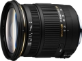

这是去年推出的EX DC 17-50/2.8 OS HSM的无防抖功能版本，适用卡口为索尼和宾得。采用13组17片镜头结构，最近对焦距离为28cm。
我是宾得K7，除了做工外其他好于DA16-50星头，但是做工还过得去。
1高性价比。2各项指标均衡，特别是大光圈可用。3焦外好。4微距不是摆设，近摄能力很强大。
1不能全时手动对焦，自动对焦时不小心会打手。2遮光罩简陋、工作状态有间隙。
宾得/索尼口的17-50，阉割掉镜头防抖的版本 目前性价比很高，作为不怎么用大光圈的我而言，应付偶尔的暗光情况已经足够了
目前价格非常便宜，用起来不心疼，保护镜都不上直接用 解析度还不错，尤其是在50m端，即使2.8全开也能接受 广角端畸变较小，不会特别恼人 我用两台宾得，这一颗头色彩在两台机身上表现不一致，不过都在比较正的范围 分量比较轻，2.8变焦做成这样还是很出色的。和宾得小巧的机身搭配不会导致不平衡 对焦在没有进行任何机身微调的情况下就很准确，看来适马的玩意也不都是跑焦的，感觉自己像中奖一样
17mm广角端画质有点差，尤其是边角 镜头做工一般，变焦环手感不是很好，变焦阻力也有点不均匀 对焦环偶尔会打手 遮光罩做工一般，好在我基本不用 综上，虽然这颗镜头不会让你大爱，但是作为干活的工具还是靠得住的。鉴于其低廉的价格，性价比还是它最大的优势！